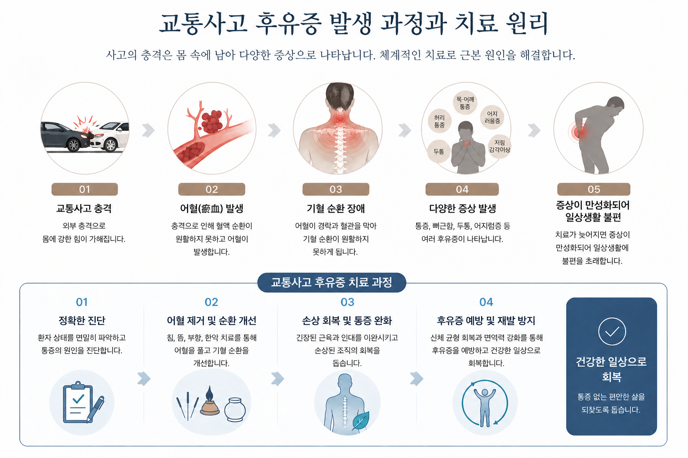

작은 충격도 몸에는 오래 남을 수 있습니다
교통사고 후유증은 사고의 충격으로 인해 체내에 어혈(瘀血)이 발생하면서 나타나는 다양한 증상을 의미합니다.
가벼운 경우 단순 타박상처럼 보일 수 있지만, 시간이 지나면서 염좌, 근육통, 전신 통증 등 복합적인 증상으로 이어질 수 있습니다.
골절이나 근육의 완전 파열 등 수술이 필요한 경우에는 병원 치료를 우선적으로 진행해야 합니다.
이후 회복 단계에서 한의원 치료를 병행하면 후유증 관리에 도움이 됩니다.
검사상 골절이나 심각한 손상이 없는 경우에도 통증이나 불편감은 지속될 수 있습니다.
이 경우 한의원 치료를 통해 어혈을 풀고 회복을 돕는 것이 효과적입니다.
사고 충격으로 인해 발생한 신체의 구조적 불균형을 바로잡고 통증을 완화합니다.
어혈을 풀어 기혈 순환을 개선하고 교통사고 후유증을 줄여줍니다.
